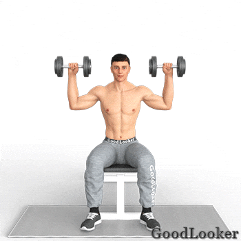
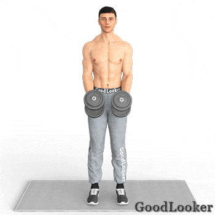
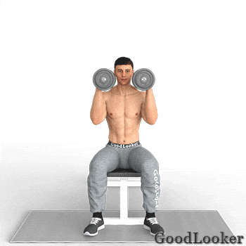
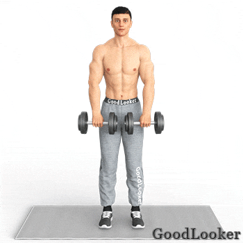
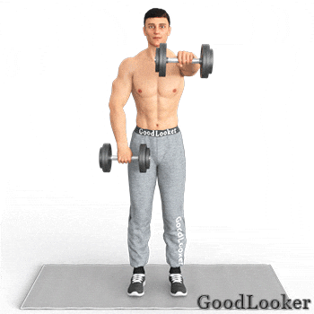

Многие атлеты считают, что плечи не нужно тренировать отдельно, ведь они без того участвуют в жиме лежа, подтягиваниях и ряде других упражнений. Это верно лишь отчасти. Акцентированное развитие дельтовидных мышц позволит добиться заветной формы перевернутого треугольника при проработке торса. Плечи делают корпус шире визуально, увеличивают эстетический вид рук, придавая им внушительные рельефы. И это лишь малая часть причин, из-за которых тренировке плеч следует выделить отдельный день.
В чем польза: Тренировка для мужчин на плечи начинается с базового жима сидя. Это элемент, развивающий объем и силу дельтоидов. Это технически простое движение, не оказывающее лишней нагрузки на позвоночник. С легким весом можно работать хоть каждый день — никаких перегрузок вы не испытаете.
Как выполнять: Для работы желательно использовать стул с высокой спинкой. Сядьте на него, выпрямите спину. Вес поднимите так, будто удерживаете гриф штанги. После этого выжимайте снаряды над головой, не допуская защелкивания локтевого замка. В процессе движения предплечья всегда перпендикулярны полу.
Сколько выполнять: 10-12 повторений в 4-5 подходов.

В чем польза: Самое популярное упражнение для развития плечевой мускулатуры. Акцент движения приходится на средний пучок дельт, который делает плечи более объемными и внушительными визуально.
Как выполнять: Работа ведется стоя. Удерживайте спину прямо, избегая перекосов корпуса. Возьмите вес перед собой так, чтобы гантели находились параллельно друг другу. Поднимайте снаряды через стороны, соблюдая небольшой сгиб в локте. В пиковой точке внешние стороны гантели должны оказаться немного выше внутренних.
Сколько выполнять: 10-12 повторений в 4-5 подходов.

В чем польза: Задний пучок дельтовидных мышц является одним из самых сложных в проработке. Но именно он отвечает за визуальную ширину плеч, позволяя развить форму корпуса в виде перевернутого треугольника. Данный тип разводки акцентировано нагружает мышечную группу, а также укрепляет мускулатуру поясничного отдела.
Как выполнять: Наклоните корпус вперед, находясь в небольшом полуприседе. Спина должна удерживаться в естественном прогибе. После этого поднимите с пола снаряды и разводите их до тех пор, пока не примите Т-образную форму. Чтобы лучше прочувствовать напряжение, делайте паузы в пиковых точках.
Сколько выполнять: 10-12 повторений в 4-5 подходов.
В чем польза: Элемент программы для мужчин в домашних условиях сосредотачивает напряжение в переднем пучке дельт. Другой полезной особенностью упражнения является его техническая простота, оптимизирующая движение для новичков.
Как выполнять: Сев на стул, возложите гантели на плечи так, чтобы их грифы оказались параллельны друг другу. После этого начинайте аккуратно отжимать вес над головой, не допуская полного закрытия локтевого замка. После этого верните снаряды в исходную позицию и выполните очередное повторение.
Сколько выполнять: 10-12 повторений в 4-5 подходов.

В чем польза: Элемент, направленный на развитие среднего пучка дельтоидов. Новичкам желательно работать с маленькими весами, поскольку к амплитуде движения придется привыкнуть и поставить правильную технику. Тяга, опять же, входит в список базовых движений на развитие объема и силы плеч.
Как выполнять: Гантели необходимо взять продольным хватом, будто удерживаете гриф штанги. Следите за тем, чтобы в спине соблюдался естественный прогиб. Аккуратно поднимите вес до уровня подмышек, удерживая локти в развернутом друг от друга положении. После секундной паузы опустите снаряды.
Сколько выполнять: 10-12 повторений в 4-5 подходов.

В чем польза: Упражнение нацелено на проработку переднего пучка дельтоидов. Также в работе задействована верхняя часть грудных мышц. Как и любое другое упражнение на плечи с гантелями, оно способствует развитию силы хвата.
Как выполнять: Удерживайте вес перед собой продольным хватом возле бедер. Не сутульте спину, удерживая естественный прогиб. После этого медленно поднимайте вес перед собой, пока рука не встанет в параллель полу. Опустив вес, поменяйте сторону и сделайте очередное повторение. В пиковых точках можно делать небольшие паузы.
Сколько выполнять: 10-12 повторений в 4-5 подходов.
